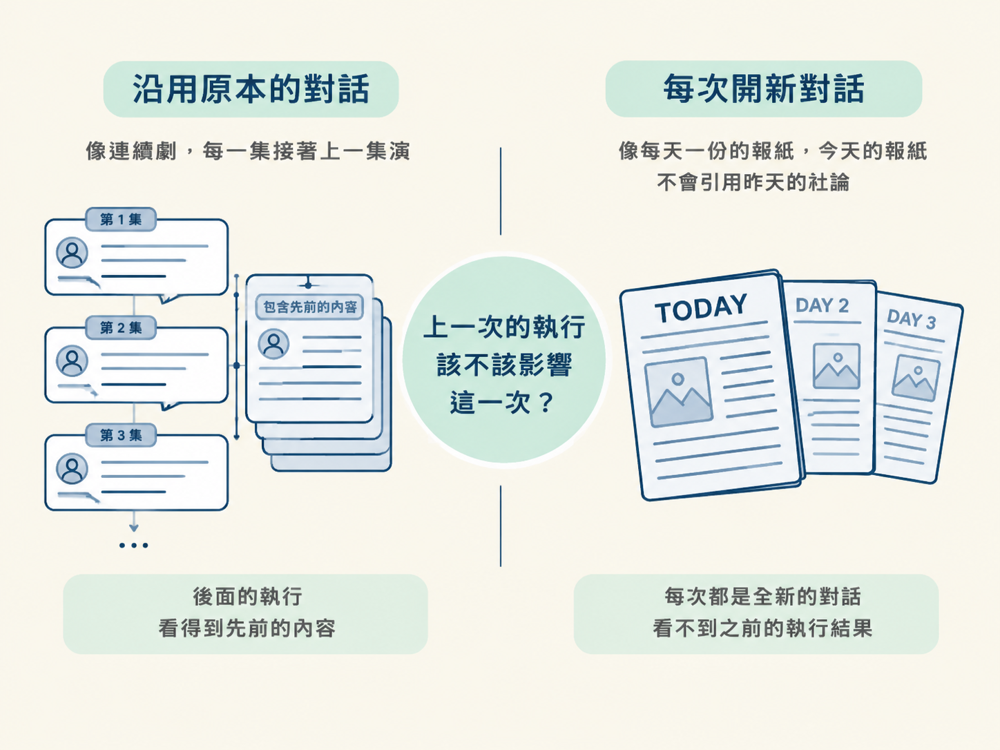
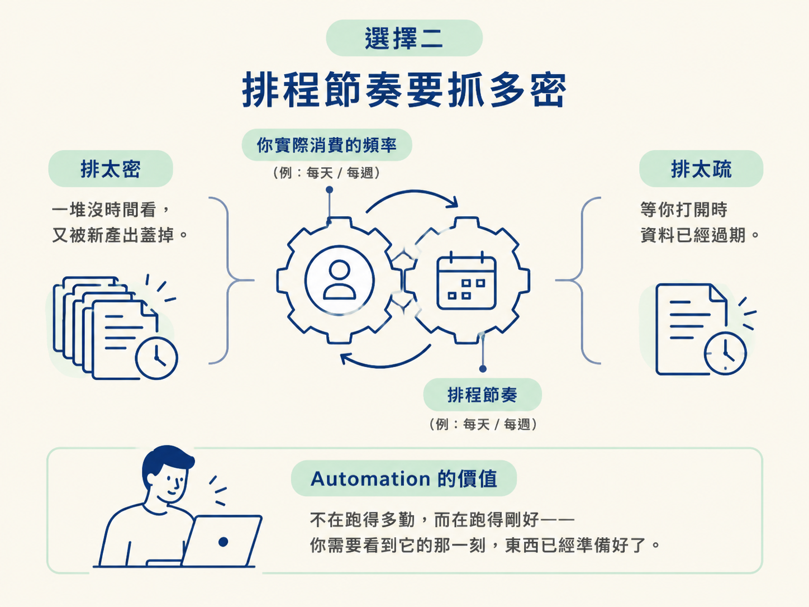
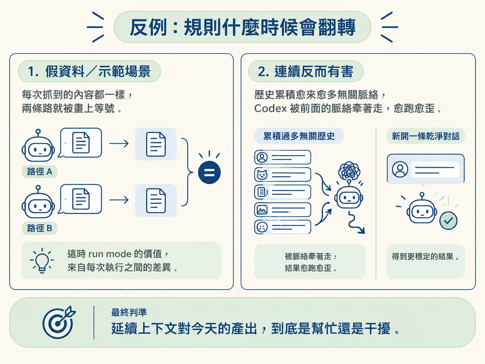

看完這一篇，你能依任務性質選對兩件事：run mode（沿用原本的對話 vs 每次開新對話），以及排程節奏（每日／每週／自訂）。
你已經會建立 automation 了。設定畫面裡有兩個選項，很容易被隨手帶過：一個是「這次要跑在原本的對話，還是每次開一條新的對話」，另一個是「排程要排得多密」。上一課我只請你先知道有這兩個選項，因為它們值得單獨一課。
原因很簡單。automation 到點就會跑，這件事不會因為這兩個選項而改變。但同樣一個 automation，選對了，就是每天準時把該看的東西送到你面前；選錯了，就是每天準時產生一份你根本不想看的東西，最後你會默默把它關掉。這一課處理的就是這兩個選擇。
先看這兩個選項長什麼樣子。當 automation 觸發時，它可以：
差別的核心只有一個問題：上一次的執行該不該影響這一次。沿用原對話，就像連續劇，每一集都接著上一集演；每次開新對話，則像每天一份的報紙，今天的報紙不會引用昨天的社論。

| 沿用原本的對話 | 每次開新對話 | |
|---|---|---|
| 看得到之前的執行嗎 | 看得到，延續上下文 | 看不到，每次都是全新的 |
| 適合的任務 | 需要連續性、前後累積的工作 | 每份產出應該彼此獨立的工作 |
| 典型例子 | 每天刷新資料並更新同一個頁面 | daily brief、每日獨立摘要 |
實際選的時候，你只要問自己一句話：這個 automation 今天的產出，需不需要記得前幾次發生過什麼？
答案是「需要」，就沿用原本的對話。課程示範的資料刷新屬於這一類：它每天去抓最新資料、更新同一個儀表板、重新部署。這是連續的維護工作，你在同一條 thread 裡持續做同一件事，開新對話反而多此一舉。
答案是「不需要，甚至不應該記得」，就每次開新對話。課程舉的例子是 daily brief：今天的 daily brief 不該被昨天的 daily brief 影響。如果每天都奠基在前一天的內容上，這份簡報會愈滾愈偏，最後它在回顧自己昨天的作業，而不是整理今天真正重要的事。
每個上班日早上 8:00，開一條新的對話，幫我做一份今天的 daily brief。把這兩個例子擺在一起，判準就浮出來了：資料刷新要的是「持續」，daily brief 要的是「獨立」。你這個 automation 屬於哪一種，答案通常當場就有。
第二個選擇是節奏。上一課列過每天、只跑上班日、每週、自訂時段這些選項，但真正要決定的是「多密才對」。這裡有兩股張力在拉扯：排得太密，你會收到一堆沒時間看、又被新一份蓋掉的產出；排得太疏，等你看到的時候資料已經過期了。
一個好用的判準：把排程的節奏，對齊你消費這份產出的節奏。如果你每天上班第一件事就是打開這個儀表板，那就每天在上班前刷新一次；如果你是每週一才做一次回顧，排每天跑就是浪費。automation 的價值不在跑得多勤，而在跑得剛好：你需要看到它的那一刻，東西已經準備好了。

還有一個細節值得注意：時段要對齊你的作息，而不是對齊整點。daily brief 排在上班前才有意義，資料刷新排在你打開儀表板之前才有用。這跟上一課說的是同一件事，但它其實就是節奏決策的一部分。
「需要連續性就沿用同一條對話、產出要獨立就開新對話」這條規則很清楚，但有兩種情況它會翻轉。
第一種是假資料或示範場景。課程示範的 Mission Control 用的是虛構資料，每次抓到的內容都一樣；這種情況下，開新對話或沿用原對話其實沒有差別，因為根本沒有會變的東西。run mode 的價值來自「每次執行之間有差異」。資料不會變的時候，這個選擇就無關緊要。
第二種是任務雖然需要連續，但連續反而有害。有些自動化做久了，會累積愈來愈多無關的歷史，Codex 被前面的脈絡牽著走，愈跑愈歪。這時即使任務表面上像是連續的，每次開一條乾淨的對話反而能得到更穩定的結果。真正的判準不是「任務像不像連續」，而是「延續上下文對今天的產出，到底是幫忙還是干擾」。

Run mode 的判準是「今天的產出需不需要記得前幾次」：需要就沿用原本的對話，例如每天刷新同一份資料；不需要、甚至不該記得就每次開新對話，例如 daily brief。節奏的判準是「對齊你消費它的頻率」：每天看就每天跑，每週回顧就每週跑，並把時段排在你真正會用到它之前。這兩個選擇都不改變 automation 會不會跑，只決定它跑出來的東西對你有沒有用。
到這裡，你已經會建立 automation，也知道怎麼選 run mode 和節奏。但我們還沒碰 automation 真正的主力用法：接上 Gmail、Slack、GitHub 這類 plugin，讓它每天替你盯著某些事。下一課就來談這個。